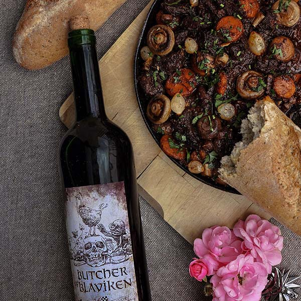

The Witcher 3 Boeuf Bourguignon
Recipe by Witcher Kitchen

"I detest banquets. Vacuous conversation, food portions fit for a mouse, drinks that taste like p***."
Boeuf Bourguignon, or Burgundy Beef, is a beef stew from the French region of Burgundy. In The Witcher 3, this dish appears in the kingdom of Toussaint, which is inspired by real-world France. And of course, one of the ways this inspiration is conveyed is with plentiful wine and Francophone cuisine. Read on to learn how to cook up this opulent comfort food.
Ingredients
- fresh beef, brisket or shin - 600g
- smoked bacon - 150g
- dry red wine - 1-1.5 cups (250-375ml)
- tomato paste - 1 tbsp
- rapeseed oil - 1 tbsp
- butter - 2 tbsp
- pearl onions or shallots - 100g
- onion, large - 1 piece
- carrots, large - 1 piece
- small mushrooms - over a dozen (2 handfuls)
- parsley - half a bunch
- bay leaf - 1 piece
- dried or fresh thyme - 1/2 teaspoon or a small branch
- garlic - 2 cloves
- pepper, salt
- wheat baguette for serving
Steps
- CHOICE OF WINE AND MEAT: Butcher of Blaviken unfortunately can not be bought in stores, but it can be successfully replaced with regular red dry wine. It is important that you buy the liquor you like, so try it before cooking. Let Melitele protect you against adding wine you do not really savour - after cooking it will not be any better!
When it comes to meat, a brisket will be great for the dish. It is a relatively cheap piece of beef, you can stew it for a long time, and it also contains bones that will be useful for making a broth. You can also buy a shin or bladel. It is also worth asking a good local butcher for a piece of meat dedicated for long cooking.
- PORK FAT/BACON: Remove the skin from the bacon and cut the fat into thin slices - about 1cmx4cm. If it's smoked, you can cook it for a few minutes in boiling water and drain off (that the taste of the smoked meat should not be too intense to other ingredients). Heat up the oil in a frying pan, put the pieces of bacon and fry, stirring occasionally, until you get a brown crust. The fat should mostly melt. Put the scratchings into a pot in which we will cook the stew. Leave the melted fat in the pan for a further use.
- MEAT AND BROTH: Remove the larger pieces of fat from the meat (leave the smaller ones - it will enrich the taste and consistency of the stew) and separate the meat from the bones. Then put the bones in a saucepan, add thyme, some salt and pour 1.5 glasses of water. Cook under lid, simmer for about 1 hour. After this time, discard the bones, strain the stock and set it aside.
Cut the separated meat into bigger pieces, more or less 10x5cm - often the recipes recommend to cut the meat into a finer cube, but this causes the juices to run away from it, so it is better to fry the larger pieces and then cut them into smaller ones. Use the pan with the remaining fat from bacon, warm it up and put pieces of beef - they can not touch each other and should have some space. The point is that they will fry, not stew. Fry the pieces for about 2-3 minutes on each side for strong browning. They will be still raw in the inside, but this is how it should be. Then put the pieces of meat on the plate to cool down. When they are cold, cut them into smaller particles, for example thick stripes. Then transfer them into a pot with pork scratchings.
- ONION + GARLIC: Chop the onion and fry on the same pan for about 3 minutes until brown, stirring (if necessary, add some oil). Add the crushed garlic and fry for half a minute. Transfer everything into a pot with bacon scratchings and beef.
- CARROTS: On the same pan, fry thick slices of peeled carrots until golden brown, on both sides, add some oil if necessary. After frying, put aside in a separate bowl, because carrots will be added at the end of stewing process.
- MUSHROOMS: Wash the mushrooms under running water and cut off the stems. If they are large, cut them in half. Melt the butter in the pan, add the mushrooms and fry until golden brown for about 3-4 minutes. At the end, add some salt and pepper, mix. Transfer to a bowl with carrots for a further use.
- ONIONS: Pearl onions rarely appear in the innkeepers storage (marinated in vinegar from the jar are not suitable), but you can replace them with half cut shallots. Place onions in a frying pan with 1 tablespoon of butter and fry for few minutes until golden. Put in a bowl with carrots and mushrooms.
- WINE: Put the wine on a hot pan, on which we fried everything, and cook for a while. In this way, we remove from the pan the remains of the "taste" from frying. Then we pour warm wine into a pot of meat.
- SIMMERING: Add a beef broth to the pot with bacon, meat, onions, garlic and wine. Add half of the parsley and 1 bay leaf. Stir, cover and simmer for about 2-3h until the meat is soft, stirring occasionally and pouring wine if too much liquid boils out. After 30 minutes, remove the parsley, and after 1.5 hours, add salt and a little tomato paste for taste and a better color. 20 minutes before the end of simmering, pull the bay leaf and add fried mushrooms, onions and carrots. Put the ready goulash out of the fire and season it if necessary.
- SERVING: The boeuf bourguignon should be left in the fridge for the whole night - then it will taste even better. We serve the dish with chopped parsley and eat in the company of a large piece of fresh baguette.
Home